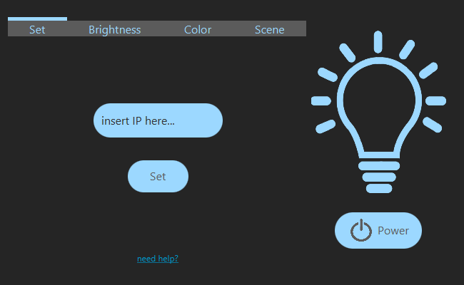
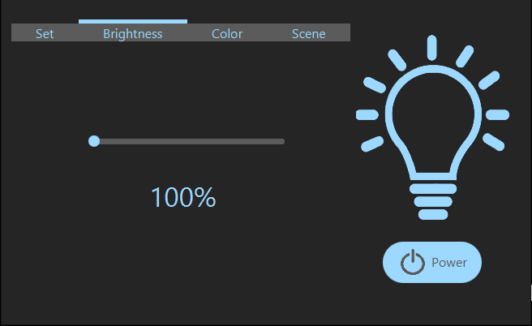
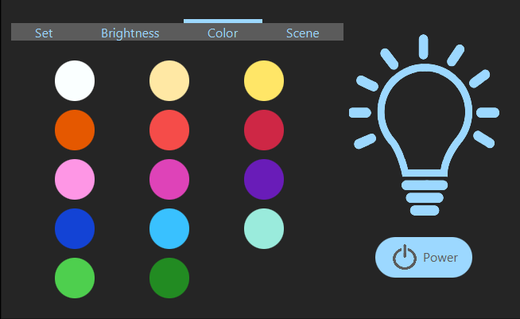

First of all, select your smart bulb from the official Yeelight app for Android or Apple. If you have never used this app before, check this official guide: https://www.yeelight.com/faqs/yeelight-app.
Now extend the bottom menu and open the lan control section; toggle it on (on=green).
In this way y2e will be able to communicate with your smart bulb! You can also follow this video:
Select your smart bulb from the official Yeelight app, open the menu at the top right and select "Device info": the "ip address" field is what we are looking for. You can also follow this video:
Then, enter it in the ip field of y2e and click on "set":
Once this is done, the ip will be saved and you will no longer have to do this step. If instead you want to change the ip, you can simply enter the new ip and then click "set".
To set the power on or off, use the button power. You can easily check if the smart bulb is on or off by looking at the drawing of the light bulb above the power button.
Set the brightness of the smart bulb with the simple slider in the Brightness tab.
Set the color by clicking on the color that you want in the color tab: there are all the main Yeelight colors.
In the scene tab, there are three configurations that you can use quickly and easily:
- Pc: a soft blue light
- Reading: the sun light, in your room
- Relax: just the color of a warm candle